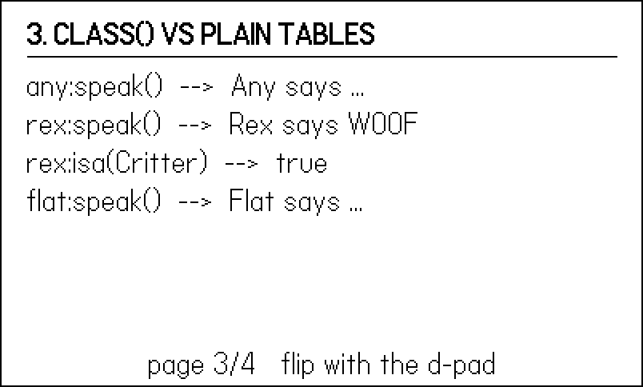
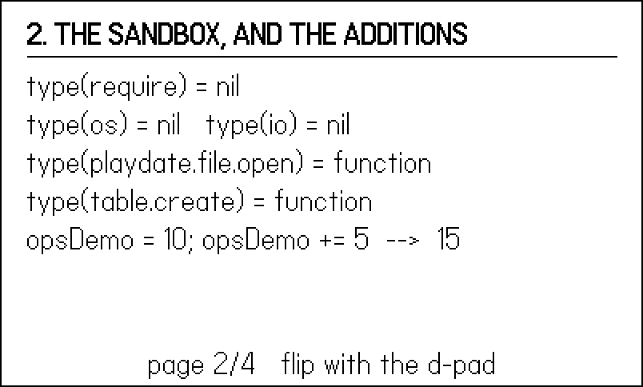
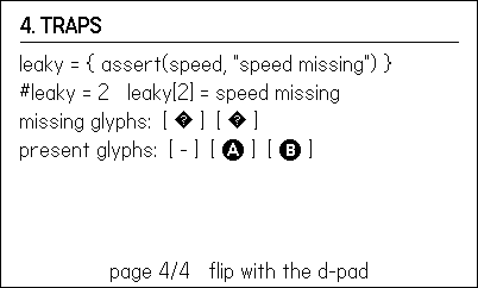

2 Lua the Playdate Way
Playdate Lua looks like the Lua you may already know — it is Lua 5.4, compiled by pdc and run by a runtime configured for 32-bit numbers — but it differs from desktop Lua in a handful of ways that shape how every game in this book is structured. The biggest is a single keyword: import, which replaces require and, crucially, does not give each file its own module scope. Every file in your game runs in one shared global environment. Fight that fact and you get mysterious collisions; build on it and you get the clean module-per-concern layout used by all sixty games behind this book.
This chapter’s example is a laboratory, not a game. 02-lua-lab is a four-page Playdate app, flipped through with the d-pad, and each page draws proof of a claim made in this chapter: two files sharing a global, a second import doing nothing, require and os and io simply not existing, a class instance dispatching an overridden method, and a famously sneaky assert leaking a value into a table. When this book asserts something about the runtime, you can flip to the page and watch the runtime agree.
We cover the shared environment and the module convention first, then CoreLibs and its class() object system versus plain tables, then <const>, the sandbox and pdc’s language extensions, and finally a rogues’ gallery of traps that have each cost a real game an afternoon.
2.1 Sixty seconds of Lua, for the arriving programmer
If Lua is new to you, four of its habits explain most of what follows in this book; the rest you can absorb from the listings.
Tables are the only data structure. Arrays, records, objects, sets, modules — all are tables, {}. A table maps keys to values; t.name is sugar for t["name"]; assigning nil to a key deletes it.
Arrays start at 1. t[1] is the first element, #t is the length, and the whole Playdate API agrees — the SDK’s own conventions document leads with this. Off-by-one reflexes from C will bite you here, not there.
Functions return multiple values. Not tuples, not arrays — actual multiple returns. playdate.getCrankChange() returns two numbers; gfx.getTextSize(msg) in Chapter 1 returned width and height. Multiple returns spill into whatever receives them, which is powerful and, as the traps section shows, occasionally treacherous.
Everything not declared local is global. There is no variable declaration keyword; assign to a new name and you have just minted a global. On most platforms that is a style problem. On Playdate, where all files share one global environment, it is the architecture — so it deserves its own section.
2.2 One global world
On desktop Lua, require "alpha" loads a module, and the module decides what to expose by returning a table; its globals can be isolated per environment. Playdate has no require. Files join a game with import, and the SDK reference is blunt about the difference: all files imported from main.lua (directly or transitively) are compiled into a single bundle, and import runs each file’s code exactly once — a second import of the same file, from anywhere, does nothing at all.
Here is the example’s import block:
import "alpha" -- defines Alpha, sets the global SHARED
import "alpha" -- a second import runs NOTHING (page 1 proves it)
import "beta" -- defines Beta; reads SHARED while loading
import "lab" -- the page framework and all four proofsNote alpha imported twice — deliberately. Now the two files. alpha.lua sets a global and a local:
-- alpha.lua runs in the SAME global environment as every other
-- file in the game. Nothing is returned, nothing is isolated.
AlphaLoads = (AlphaLoads or 0) + 1 -- counts how often this runs
SHARED = "set by alpha.lua" -- a global: every file sees it
local secret = "only alpha.lua can read this" -- locals stay private
Alpha = {} -- the module-table convention
function Alpha.report()
return "AlphaLoads = " .. AlphaLoads
endbeta.lua imports nothing, declares nothing about alpha, and reads the global anyway:
-- beta.lua imports nothing, yet it sees alpha.lua's global the
-- moment it loads, because import ran alpha.lua's code first.
Beta = {}
Beta.sawAtLoad = SHARED -- captured while loading
function Beta.report()
return 'Beta.sawAtLoad = "' .. tostring(Beta.sawAtLoad) .. '"'
endThe lab’s first page renders what actually happened (Figure 2.1):
pages[1] = function()
title("1. ONE GLOBAL WORLD")
line(0, 'SHARED = "' .. SHARED .. '"')
line(1, Beta.report())
line(2, Alpha.report() .. " (imported twice, ran once)")
line(3, "_G.secret = " .. tostring(_G.secret)
.. " (locals stay file-private)")
endFour facts, all on screen. Globals cross file boundaries freely, in import order — beta.lua could read SHARED while loading because alpha.lua had already run. The double import was harmless: AlphaLoads is 1, so you never need to be clever about “has this been loaded yet.” Locals, meanwhile, are the only privacy there is: secret exists for alpha.lua’s code and nobody else, and _G.secret is nil.
import also differs from require in a smaller way that bites people porting desktop habits: it is a compile-time directive, not a function. You cannot compute a filename and import it conditionally at runtime; pdc resolves the whole import graph when it builds the pdz.
One shared world also means one shared spelling test. Misspell a global on assignment and you silently create a second variable; misspell it on read and you silently get nil, and the error surfaces somewhere else entirely. The SDK ships a countermeasure: import "CoreLibs/strict" installs a metatable on the global table that turns any use of an undeclared global inside a function into an immediate, correctly-located error. “Declared” means assigned once at file top level — which the module-per-concern convention already does for every module table — so well-structured code runs under strict mode unchanged. Import it while developing if stray-global bugs find you often; it is a debugging tool, not something to ship.
2.2.1 Module-per-concern: the convention this book uses
One shared environment means one namespace, and one namespace needs a convention. The one used throughout this book — and throughout the shipped games it draws on — is module-per-concern globals: each file owns exactly one globally named table (Input, Draw, Game, Config…), puts its functions in that table, and keeps everything else local. That is what Alpha = {} and function Alpha.report() were doing above. The file is the module; the global table is its one export; the capital letter marks it as deliberate.
You can see the convention at scale in Molt, an arkanoidvania whose main.lua opens by assembling the game out of twenty concerns:
-- molt/source/main.lua:9
import "config"
import "util"
import "harness"
import "sfx"
import "music"
import "fx"
import "save"
import "blocks"
...
import "input"
import "draw"Each of those files defines one global — C, Util, Harness, Sfx, Music and so on — and any file may call any other’s, because they all live in the same world. Import order is the only dependency mechanism: config comes first because everyone reads C at load time. There is no header, no module manifest, and after twenty-eight rooms and seven bosses, no confusion about where anything lives: the concern in the filename is the table in the code.
The anti-pattern is the desktop reflex:
-- ANTI-PATTERN: desktop-Lua module style; do not do this on Playdate
local M = {}
function M.report() ... end
return M -- import ignores this; callers get nothingimport does not capture return values the way require does (the lab’s page 1 already showed you where the real sharing happens). A file written this way runs, defines its functions in a local table, and then evaporates — nothing outside the file can reach M. If a module of yours seems to “not exist” at runtime, this is almost always why.
2.3 CoreLibs: the SDK’s Lua half
The core playdate.* API is implemented in C, but the SDK also ships CoreLibs/ — a set of optional libraries written in Lua, which you can read in the SDK directory like any other source. Nothing in CoreLibs loads unless you import it, and several APIs in this book carry a “requires CoreLibs” footnote. The ones you will meet:
CoreLibs/graphics— conveniences overplaydate.graphics; the examples import it as a matter of course.CoreLibs/object— theclass()system, next section.CoreLibs/sprites,CoreLibs/timer,CoreLibs/animation,CoreLibs/easing— the sprite system and motion toolkits of Chapter 6 and Chapter 15.CoreLibs/crank—getCrankTicks, the detent-style crank read (Chapter 10). Forgetting this import is the classic “why isgetCrankTicksnil” bug:playdate.getCrankChangeis core,getCrankTicksis CoreLibs.CoreLibs/ui— the grid view and crank indicator of Chapter 11.
Because CoreLibs is plain Lua running in the same global world as your code, there is no magic to respect: importing CoreLibs/object simply defines a global function named class, exactly the way alpha.lua defined Alpha.
2.4 class() or a plain table?
Lua has no built-in classes; it has tables and metatables, from which you can build any object system you like. CoreLibs builds one for you. The lab defines a tiny hierarchy with it:
class("Critter").extends() -- needs import "CoreLibs/object"
function Critter:init(name)
Critter.super.init(self)
self.name = name
end
function Critter:speak()
return self.name .. " says ..."
end
class("Hound").extends(Critter)
function Hound:speak() -- override: calls dispatch dynamically
return self.name .. " says WOOF"
endclass("Critter").extends() creates a global class named Critter deriving from Object, the CoreLibs base class. Instances come from calling the class — Critter("Any") — which invokes your init. Subclasses chain to the parent through ClassName.super.init(self, ...), and overriding a method just works: a Hound stored in a variable typed as nothing at all still barks, because dispatch happens at runtime through the instance.
The same critter needs no class system at all:
-- The same critter without class(): a table and a constructor.
local function newCritter(name)
local c = { name = name }
function c:speak()
return self.name .. " says ..."
end
return c
endPage 3 of the lab shows both flavors answering the same calls (Figure 2.2): the base critter mumbles, rex:speak() dispatches to the override, rex:isa(Critter) confirms the inheritance relationship, and the plain-table critter is indistinguishable from the classy one at the call site.

class() (top three lines) and a plain table doing the same job (bottom).
So which do you use? Reach for class() when you genuinely have a hierarchy — a dozen enemy types sharing update logic, or when the SDK requires it (sprite subclasses in Chapter 6 extend playdate.graphics.sprite). For everything else, the games behind this book overwhelmingly use plain tables and module functions: a crab is G.crab = { x = 0, snapT = 0 } and the behavior lives in Crab.update(dt). Data stays inspectable, there is no hidden metatable machinery in your hot loop, and the “method or function?” question never arises.
rex:speak() is sugar for rex.speak(rex) — the colon passes the receiver as a hidden self argument. Call a colon-defined method with a dot (rex.speak()) and self is nil; define with a dot and call with a colon and your first argument silently becomes self. The SDK documentation singles this out as a source of very-difficult-to-track-down bugs, and it is. If a method dies with “attempt to index a nil value (local ‘self’)”, you dot-called a colon method.
2.5 <const>, and why every file starts with one
You met this line in Chapter 1:
local gfx <const> = playdate.graphics<const> is a Lua 5.4 variable attribute: the local cannot be reassigned, and the compiler is free to treat it as a compile-time constant. On Playdate it earns its keep twice over. First, speed — playdate.graphics.fillRect(...) performs two global-table lookups every call, while gfx.fillRect(...) performs none for gfx itself; in an update loop that draws hundreds of things, the difference is measurable (the SDK’s own documentation makes this exact recommendation). Second, safety in the one-global-world: a local can never collide with another file’s names, and <const> guarantees you cannot accidentally clobber your own shorthand. Because locals are file-scoped, the line must be repeated at the top of every file that draws — you will see it there in every example from here on.
2.6 The sandbox, and what pdc adds
Playdate Lua removes parts of the standard library and adds things standard Lua does not have. The lab’s second page interrogates the runtime directly:
pages[2] = function()
title("2. THE SANDBOX, AND THE ADDITIONS")
line(0, "type(require) = " .. type(require))
line(1, "type(os) = " .. type(os)
.. " type(io) = " .. type(io))
line(2, "type(playdate.file.open) = "
.. type(playdate.file.open))
line(3, "type(table.create) = " .. type(table.create))
line(4, "opsDemo = 10; opsDemo += 5 --> " .. opsDemo)
end
require, os, and io do not exist; playdate.file and the SDK’s table additions do; and += compiled and ran.
As Figure 2.3 shows, require, os, and io are all nil — not restricted, not stubbed; the libraries were never opened. The runtime provides coroutine, math, string, table, and utf8, and that is your standard library. Everything those missing libraries did is either gone on purpose (spawning processes, arbitrary filesystem access) or replaced by the playdate namespace: files go through playdate.file and the delightfully simple playdate.datastore (Chapter 17), time through playdate.getTime and friends, and module loading through import. When you port Lua code from elsewhere, grep it for os. and io. first; that is the porting work.
In the other direction, the SDK extends the language and the table library:
- Compound assignment.
pdcaccepts+=,-=,*=,/=,//=,%=,<<=,>>=,&=,|=, and^=. The lab’sopsDemo += 5on page 2 is standard-Lua-invalid and Playdate-Lua-fine. Handy, with one caveat: the moment you paste that code into a desktop Lua tool (a linter, a test runner, a REPL), it stops parsing. - Table additions.
table.indexOfElement(t, el)finds a value in an array-style table;table.getsize(t)reports array and hash counts;table.create(narr, nhash)preallocates — the one to remember for Chapter 19, because growing a table element by element in your update loop is a garbage-collection tax you can avoid.
The sandbox keeps print, and in the Simulator its output lands in the console window along with error tracebacks. It remains the fastest debugging tool on the platform — with the caveat that a print every frame is itself slow enough to distort timings, which is one reason Chapter 18 moves telemetry into counters written once every few seconds.
2.7 Traps
Everything above is architecture. What follows is scar tissue: four traps, each of which has burned at least one real game, three of them demonstrable on the lab’s final page (Figure 2.4).
2.7.1 assert returns its arguments
assert(v, message) checks v — and then, on success, returns all of its arguments, message included. Combine that with Lua’s rule that a function call in the middle of a table constructor or argument list expands to all of its return values, and this innocent-looking “validate while you build” idiom plants a bomb:
-- assert returns ALL of its arguments on success, so the message
-- becomes a surprise second element in the table constructor.
local speed = 4
local leaky = { assert(speed, "speed missing") }
-- #leaky == 2, and leaky[2] == "speed missing"The lab prints the wreckage on page 4: #leaky is 2, and leaky[2] is the string "speed missing" (Figure 2.4). In a real game this surfaces far from the cause — a varargs helper suddenly receives an extra string, ipairs walks one element too many, a “table of one number” serializes with a stowaway. The fix is to keep the assert and the construction separate: assert(speed, "speed missing") on its own line, then local t = { speed } — or wrap the call in parentheses, (assert(speed, "msg")), which truncates it to one value.

#leaky = 2), and the system font rendering · and — as error boxes while -, Ⓐ, and Ⓑ render fine.
2.7.2 The system font is missing glyphs you will reach for
The default system font is charming and mostly complete — but the middle dot · and the em dash —, two characters technical writers type by reflex, are not in it. They render as error boxes, as page 4 demonstrates live; here is the page that drew Figure 2.4, boxes and all:
lab.lua
pages[4] = function()
title("4. TRAPS")
line(0, 'leaky = { assert(speed, "speed missing") }')
line(1, "#leaky = " .. #leaky
.. " leaky[2] = " .. tostring(leaky[2]))
line(2, "missing glyphs: [ · ] [ — ]")
line(3, "present glyphs: [ - ] [ Ⓐ ] [ Ⓑ ]")
end The circled button glyphs Ⓐ and Ⓑ are present (they are how every game writes “press Ⓐ”), as are the ordinary hyphen and asterisk. The practical rule: separators in UI text are hyphens or spaces, and any string you did not type from muscle memory gets one look on the actual screen. Custom fonts, which solve this properly, are in Chapter 5.
2.7.3 Same-named files silently overwrite at staging
Not a language trap but a build trap, and it belongs in this chapter because module-per-concern naming is the cure. Game projects here are staged before compiling: a shared library directory and the game’s own source are copied into one build directory, and then pdc runs. If the library has util.lua and the game has util.lua, one copy wins, silently, and the loser’s module simply never exists — the error surfaces as a nil call somewhere downstream, nowhere near the cause. pdc cannot warn you; by the time it runs, there is only one file. Name shared-library files distinctively (vecutil.lua, tcam.lua) and this never happens.
2.7.4 sign(0) is not a direction
A pure-Lua honorable mention. Every game grows a sign(x) helper, returning -1, 0, or 1, and every facing system stores -1 or 1. Feed a freshly spawned actor with zero velocity into if Util.sign(vx) == facing and the comparison is false in both facings — the actor is directionless until it first moves, and whatever depended on facing (sprite flip, attack direction) quietly does nothing. Decide at the call site what zero means: vx >= 0 and 1 or -1.
2.8 What you know now
- Playdate Lua is Lua 5.4 with 32-bit numbers, compiled by
pdc, with+=-style operators and extratablefunctions added. importreplacesrequire: every file runs once, in one shared global environment, and return values are not how sharing works.- The house convention is module-per-concern: one file, one global table (
Game,Draw,Input…), everything elselocal. - CoreLibs is optional, per-import Lua:
CoreLibs/objectprovidesclass(...).extends(...)withinit,super, andisa. - Use
class()for real hierarchies and sprite subclasses; plain tables for everything else. Never confuse:and.calls. local gfx <const> = playdate.graphicsis both a speed-up and a collision guard; it goes at the top of every file that draws.- No
require, noos, noio: files viaplaydate.fileand the datastore, time via theplaydatenamespace. - Traps with teeth:
assertleaks its message into constructors and argument lists;·and—are boxes in the system font; staged files with equal names overwrite silently;sign(0)matches no facing.
Next, Chapter 3: the update loop gets a fixed timestep, the globals get a single G state table, and the whole game becomes a mode machine — the skeleton every later example is built on.